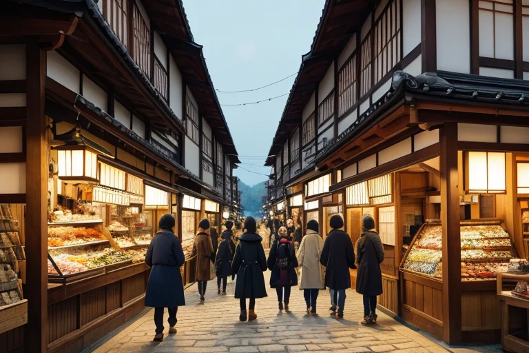
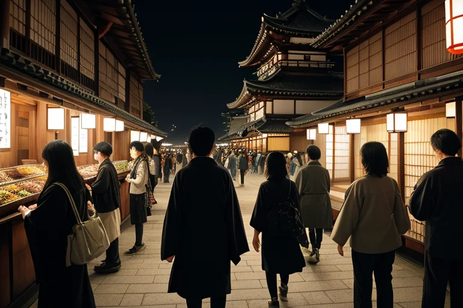
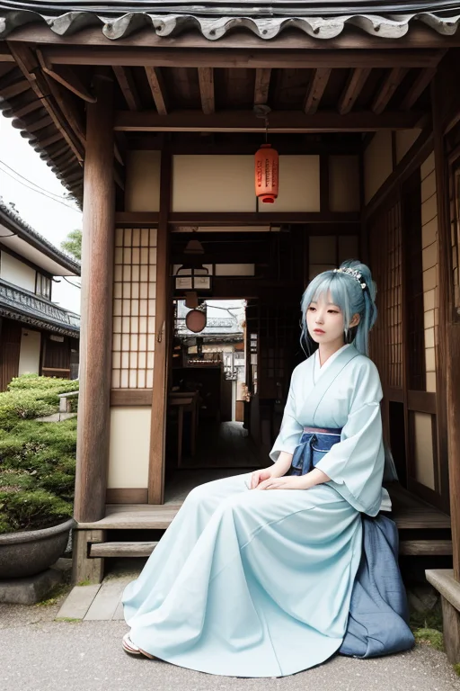

第一章 現実の長野
あなたはまだ気づいていない。この土地にも、王がいることを。
松本城の城下町。観光客の賑わいが石畳に溢れ、土産物屋からは信州味噌や野沢菜漬けの香りが漂う。通りを埋める人々の会話は、買い物の値切りの声、次の目的地を探す声、ただ流れに身を任せる笑い声で満ちている。金と人の流れは、この土地の活気そのものだ。
その喧噪のただ中、誰にも見えない姿で、一人の王が立っていた。ナガノリア・セルフ。青と白の静かなオーラを纏い、彼は流れる群衆をただ見つめる。彼の役目は、この活気の底に潜む「歪み」を調整すること。経済的な熱狂が生む精神の焦燥、過剰な期待がもたらす小さな軋み。それらは目に見えない亀裂となり、やがて土地そのものの歪みへと増幅する可能性を秘めている。
彼は手をかざす。妖精セルフィアが彼の肩に舞い、微かな風を送る。熱気を少し冷まし、ふと足を止めて深呼吸したくなるような、ほんのわずかな「間」を流れの中に仕込んでいく。王は災害を消せない。ただ、この瞬間の熱を、ほんの少しだけ和らげる調整者でしかない。
第二章 歪みの兆候
善光寺の参道は、連日観光客で埋め尽くされていた。土産物屋の呼び込み、ガイドの説明、足早に巡る団体客のざわめき。かつての静謐な信仰の場は、今や活気ある「観光資源」として機能していた。王、ナガノリア・セルフは、その喧噪の片隅に立っていた。彼の目には、人々の欲望と焦りが、目に見えない熱気となって立ち上っているのが見える。早く巡りたい、もっと買いたい、効率的に楽しみたい。そのせわしない思いが、土地に蓄積する微かなストレスとなっていた。
妖精セルフィアが彼の耳元で囁く。「主よ、歪みの波長が検知されます。軽微ですが、増幅傾向にあります」。それは大地震のような劇的なものではない。観光バスの排気ガスが混ざった空気のように、じわりと蓄積する種類の歪みだった。人々が自分自身の内面と向き合う「間」を失い、外からの刺激にただ流される時、その精神の焦燥が地脈の微振動と共鳴し始める。
王はそば屋の軒先に目をやった。客は立ち食いで急いで啜り、次の目的地へと急ぐ。彼はそっと息を吐いた。セルフィアとアルペナが織りなす微風が、参道をゆるやかに流れる。ほんの一瞬、誰かが足を止め、深く呼吸するきっかけを、風に乗せて届ける。調整は、いつもこのように些細で、ほとんど気付かれないものだ。

第三章 王の葛藤
善光寺の境内は、観光客のざわめきで満ちていた。土産物屋の呼び込み、記念写真を撮る笑い声、次々と押し寄せるバスの音。人々の欲望は、ここが信仰の場であることを忘れさせようとしていた。ナガノリアは本堂の陰に立ち、その喧噪を静かに見つめる。彼の役目は、この地に集まる「流れ」そのものを守ることだ。人の流れ、金の流れ、そしてそれに伴う歪み。しかし、守るべき静寂が欲望に侵食されていくのを前に、彼は初めて「もどかしさ」という感情を覚えた。
「王よ、あなたの心の波が乱れています」
セルフィアがそっと囁く。風の妖精は、王の内面に生じた初めての葛藤を敏感に察知していた。
「彼らが自分と向き合う『間』を奪い合っている。それを見守るだけが、我々の役目なのか」
軽井沢の別荘地では、更なる開発の計画が地脈に微かな軋みを生んでいた。ナガノリアは手を伸ばし、その軋みをなだめる。同時に、開発を推し進める人間たちの心の内にも、どこか満たされない空洞が広がっているのを感じた。守るべきは土地か、人の営みか。それとも、その狭間で失われつつある「内省」そのものか。彼には答えが出ない。王としての役割と、芽生え始めた感情の狭間で、彼はただ、高原を吹き抜ける風のように、静かに立ち尽くしていた。

第四章 妖精との対話
松本城の城下町、土産物屋の軒先でセルフィアは言った。「商いは、物と金の交換ではないのです」
彼女は、高原の風のように透明な声で続ける。「ここを通る人々は、何かを買う。おやきや味噌、木彫りの熊。でも、本当に求めているのは、『ここに来た証』や、『失った時間の代償』かもしれません。商都線の歪みは、物が溢れ、心が空ろになること。王はその流れを調整するが、根本は変えられない」
ナガノリアは黙って聞く。彼女の言葉は、彼自身の内省を促す鏡のようだ。
「善光寺の参道も、軽井沢のアウトレットも、人の流れは同じ。ただ、求めるものの質が違う。歪みは、自分が何を求めているかを見失った時、最も深くなるのです」
王はそば屋の暖簾を揺らす風を見つめた。人々は何を埋めようと、ここに足を運ぶのか。彼の役割は歪みを整えること。だが、その歪みの源である「心の空洞」に触れることは許されない。いや、感情が芽生えた今、触れずにはいられない。それが新たな迷いだった。
第五章 微調整と余韻
松本城の天守から、街を見下ろす。観光客の流れは、今日も絶えない。王は目を閉じ、精神波を拡げる。アルペナが運ぶ高原の風が、彼の感覚を街の隅々まで届ける。善光寺の階段で足を滑らせそうになった老婦人。軽井沢の交差点でふと立ち止まる若者。諏訪大社の参集殿で、商談の行き詰まりを感じる男。些細な「ずれ」の萌芽が、風のさざ波のように伝わってくる。
彼は指先をわずかに動かす。風向きが変わり、一片の木の葉が老婦人の視界に入る。彼女は一瞬、視線をそらし、足元を確かめる。若者の耳に、遠くから聞こえるはずのない祭囃子の一節が届く。彼は振り返り、別の路地へと歩みを変える。男の前に、そば屋の店主が偶然、味噌を届けに来る。ほんの数秒の遅延、一センチの位置の調整。それは誰にも気づかれない、世界の呼吸のようなものだ。
「これが、微調整」
セルフィアが囁く。王は頷く。彼は災害を消せない。ただ、偶然の連鎖をほんの少しだけ、より良い方向へ導くことができる。その先に、人が自分自身と向き合う一瞬の「間」が生まれるかどうかは、彼の管轄外だ。だが、感情を持った今、彼は願う。あの老婦人が無事に階段を上り、若者が求めていたものに気づき、男が商談の行き詰まりを自分の内省へと転換することを。それは、この土地が育んだ「内省」の質感そのものだった。
風がやみ、日常のざわめきが戻る。誰も何も気づかない。ただ、今日も歪みはほんの少し、整えられた。
あなたの町にも、王がいる。